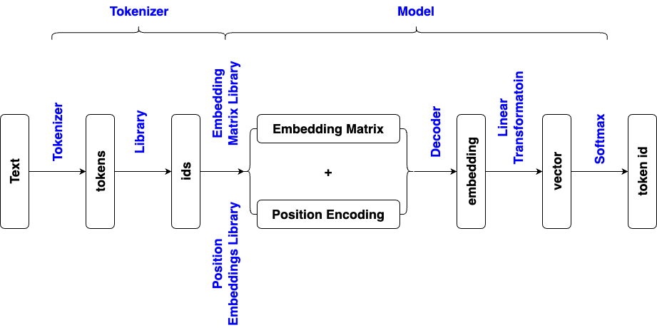

from transformers import GPT2Tokenizer, GPT2LMHeadModel
model_name = "gpt2"
tokenizer = GPT2Tokenizer.from_pretrained(model_name)
model = GPT2LMHeadModel.from_pretrained(model_name)
# GPT-2 is not specifically optimized for question answering, ask "Where is the capital of France?"
# might generates irrelevant or incoherent text
# additional context will nudges it toward factual responses
text = "Q: Where is the capital of France?\nA:"
inputs = tokenizer(text, return_tensors="pt")
output = model.generate(
inputs.input_ids,
max_length=50, # Maximum number of tokens in the generated output
num_return_sequences=1, # Number of different sequences to generate
no_repeat_ngram_size=2, # Avoid repetition of 2-grams
temperature=0.7, # Controls randomness (lower is more focused, higher is more creative)
top_k=20, # Limits to the top 20 tokens at each generation step
top_p=0.95, # Limits sampling to top 95% of probability mass
)
generated_text = tokenizer.decode(output[0], skip_special_tokens=True)
from transformers import AutoTokenizer, AutoModelForCausalLM
model_name = "gpt2"
tokenizer = AutoTokenizer.from_pretrained(model_name)
model = AutoModelForCausalLM.from_pretrained(model_name)
text = "Q: Where is the capital of France?\nA:"
inputs = tokenizer(text, return_tensors="pt")
output = model.generate(
inputs.input_ids,
max_length=50, # Maximum number of tokens in the generated output
num_return_sequences=1, # Number of different sequences to generate
no_repeat_ngram_size=2, # Avoid repetition of 2-grams
temperature=0.7, # Controls randomness (lower is more focused, higher is more creative)
top_k=20, # Limits to the top 20 tokens at each generation step
top_p=0.95, # Limits sampling to top 95% of probability mass
)
generated_text = tokenizer.decode(output[0], skip_special_tokens=True)
from transformers import pipeline
text_generator = pipeline("text-generation", model="gpt2")
text = "Q: Where is the capital of France?\nA:"
generated_text = text_generator(text, max_length=50, num_return_sequences=1)
generated_text[0]['generated_text']